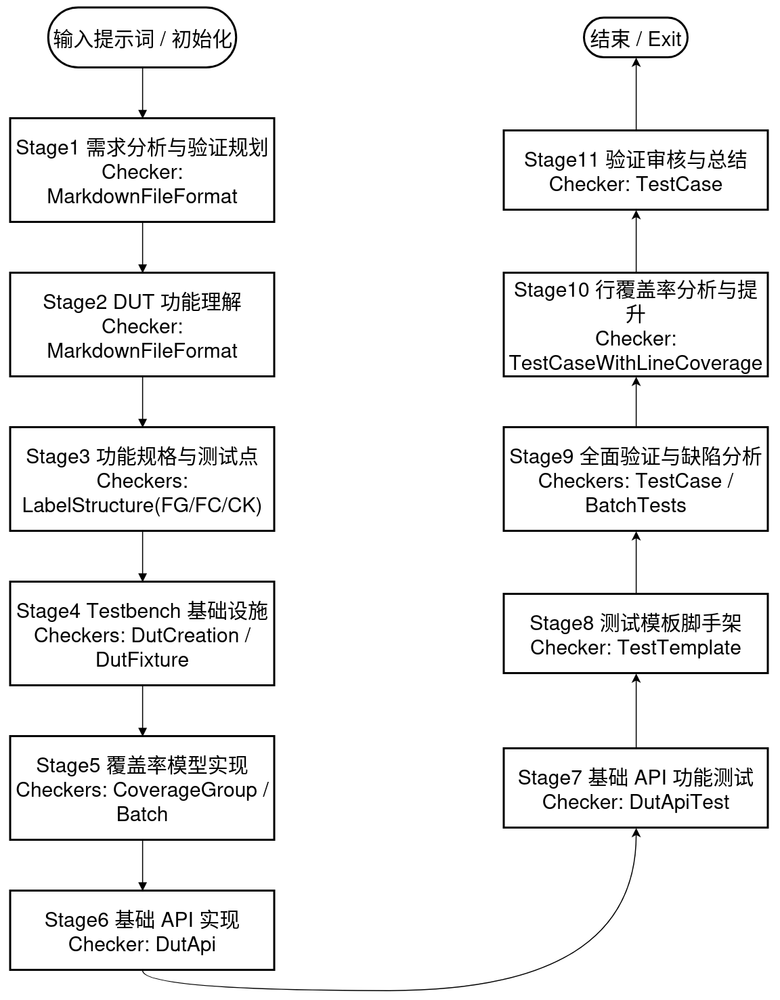

工作流
Categories:
整体采用“按阶段渐进推进”的方式，每个阶段都有明确目标、产出与通过标准；完成后用工具 Check 验证并用 Complete 进入下一阶段。若阶段包含子阶段，需按顺序 逐一完成子阶段并各自通过 Check。
- 顶层阶段总数：11（见
vagent/lang/zh/config/default.yaml） - 推进原则：未通过的阶段不可跳转；可用工具 CurrentTips 获取当前阶段详细指导；需要回补时可用 GotoStage 回到指定阶段。
- 三种跳/不跳过阶段方法：
- 在项目根
config.yaml的某个stage字段下面-name元素里的skip键配置true/false来跳过/不跳过。 - 命令行启动时可用
--skip/- -unskip someStage来控制跳过/不跳过某阶段。 - 在tui启动后可用
skip_stage/unskip_stage someStage来控制临时跳过/不跳过某阶段。
- 在项目根
整体流程概览（11 个阶段）
目前的流程包含：
- 需求分析与验证规划 → 2) {DUT} 功能理解 → 3) 功能规格分析与测试点定义 → 4) 测试平台基础架构设计 → 5) 功能覆盖率模型实现 → 6) 基础 API 实现 → 7) 基础 API 功能测试 → 8) 测试框架脚手架 → 9) 全面验证执行与缺陷分析 → 10) 代码行覆盖率分析与提升（默认跳过，可启用）→ 11) 验证审查与总结
以实际的工作流为准，下图仅供参考。 
说明：以下路径中的 <workspace>/unity_test/。
阶段 1：需求分析与验证规划
- 目标：理解任务、明确验证范围与策略。
- 怎么做：
- 阅读
{DUT}/README.md，梳理“需要测哪些功能/输入输出/边界与风险”。 - 形成可执行的验证计划与目标清单。
- 阅读
- 产出：
<OUT>/{DUT}_verification_needs_and_plan.md（中文撰写）。 - 通过标准：文档存在、结构规范（自动检查 markdown_file_check）。
- 检查器：
- UnityChipCheckerMarkdownFileFormat
- 作用：校验 Markdown 文件存在与格式，禁止把换行写成字面量“\n”。
- 参数：
- markdown_file_list (str | List[str]): 待检查的 MD 文件路径或路径列表。示例：
{OUT}/{DUT}_verification_needs_and_plan.md - no_line_break (bool): 是否禁止把换行写成字面量 “\n”；true 表示禁止。
- markdown_file_list (str | List[str]): 待检查的 MD 文件路径或路径列表。示例：
- UnityChipCheckerMarkdownFileFormat
阶段 2：{DUT} 功能理解
- 目标：掌握 DUT 的接口与基本信息，明确是组合/时序电路。
- 怎么做：
- 阅读
{DUT}/README.md与{DUT}/__init__.py。 - 分析 IO 端口、时钟/复位需求与功能范围。
- 阅读
- 产出：
<OUT>/{DUT}_basic_info.md。 - 通过标准：文档存在、格式规范（markdown_file_check）。
- 检查器：
- UnityChipCheckerMarkdownFileFormat
- 作用：校验 Markdown 文件存在与格式，禁止把换行写成字面量“\n”。
- 参数：
- markdown_file_list (str | List[str]): 待检查的 MD 文件路径或路径列表。示例：
{OUT}/{DUT}_basic_info.md - no_line_break (bool): 是否禁止把换行写成字面量 “\n”；true 表示禁止。
- markdown_file_list (str | List[str]): 待检查的 MD 文件路径或路径列表。示例：
- UnityChipCheckerMarkdownFileFormat
阶段 3：功能规格分析与测试点定义（含子阶段 FG/FC/CK）
- 目标：把功能分组（FG）、功能点（FC）和检测点（CK）结构化，作为后续自动化的依据。
- 怎么做：
- 阅读
{DUT}/*.md与已产出文档，建立{DUT}_functions_and_checks.md的 FG/FC/CK 结构。 - 规范标签：<FG-组名>、<FC-功能名>、<CK-检测名>，每个功能点至少 1 个检测点。
- 阅读
- 子阶段：
- 3.1 功能分组与层次（FG）：检查器 UnityChipCheckerLabelStructure(FG)
- 3.2 功能点定义（FC）：检查器 UnityChipCheckerLabelStructure(FC)
- 3.3 检测点设计（CK）：检查器 UnityChipCheckerLabelStructure(CK)
- 产出：
<OUT>/{DUT}_functions_and_checks.md。 - 通过标准：三类标签结构均通过对应检查。
- 对应检查器（默认配置）：
- 3.1 UnityChipCheckerLabelStructure
- 作用：解析
{DUT}_functions_and_checks.md中的标签结构并校验层级与数量（FG）。 - 参数：
- doc_file (str): 功能/检查点文档路径。示例：
{OUT}/{DUT}_functions_and_checks.md - leaf_node (“FG” | “FC” | “CK”): 需要校验的叶子类型。示例：
"FG" - min_count (int, 默认 1): 该叶子类型的最小数量阈值。
- must_have_prefix (str, 默认 “FG-API”): FG 名称要求的前缀，用于规范化分组命名。
- doc_file (str): 功能/检查点文档路径。示例：
- 作用：解析
- 3.2 UnityChipCheckerLabelStructure
- 作用：解析文档并校验功能点定义（FC）。
- 参数：
- doc_file (str): 功能/检查点文档路径。示例：
{OUT}/{DUT}_functions_and_checks.md - leaf_node (“FG” | “FC” | “CK”): 需要校验的叶子类型。示例：
"FC" - min_count (int, 默认 1): 该叶子类型的最小数量阈值。
- must_have_prefix (str, 默认 “FG-API”): 所属 FG 的前缀规范，用于一致性检查。
- doc_file (str): 功能/检查点文档路径。示例：
- 3.3 UnityChipCheckerLabelStructure
- 作用：解析文档并校验检测点设计（CK），并缓存 CK 列表用于后续分批实现。
- 参数：
- doc_file (str): 功能/检查点文档路径。示例：
{OUT}/{DUT}_functions_and_checks.md - leaf_node (“FG” | “FC” | “CK”): 需要校验的叶子类型。示例：
"CK" - data_key (str): 共享数据键名，用于缓存 CK 列表（供后续分批实现使用）。示例：
"COVER_GROUP_DOC_CK_LIST" - min_count (int, 默认 1): 该叶子类型的最小数量阈值。
- must_have_prefix (str, 默认 “FG-API”): 所属 FG 的前缀规范，用于一致性检查。
- doc_file (str): 功能/检查点文档路径。示例：
- 3.1 UnityChipCheckerLabelStructure
阶段 4：测试平台基础架构设计（fixture/API 框架）
- 目标：提供统一的 DUT 创建与测试生命周期管理能力。
- 怎么做：
- 在
<OUT>/tests/{DUT}_api.py实现 create_dut()；时序电路配置时钟（InitClock），组合电路无需时钟。 - 实现 pytest fixture
dut，负责初始化/清理与可选的波形/行覆盖率开关。
- 在
- 产出：
<OUT>/tests/{DUT}_api.py（含注释与文档字符串）。 - 通过标准：DUT 创建与 fixture 检查通过（UnityChipCheckerDutCreation / UnityChipCheckerDutFixture）。
- 子阶段检查器：
- DUT 创建：UnityChipCheckerDutCreation
- 作用：校验
{DUT}_api.py中的 create_dut(request) 是否实现规范（签名、时钟/复位、覆盖率路径等约定）。 - 参数：
- target_file (str): DUT API 与 fixture 所在文件路径。示例：
{OUT}/tests/{DUT}_api.py
- target_file (str): DUT API 与 fixture 所在文件路径。示例：
- 作用：校验
- dut fixture：UnityChipCheckerDutFixture
- 作用：校验 pytest fixture
dut的生命周期管理、yield/清理，以及覆盖率收集调用是否到位。 - 参数：
- target_file (str): 包含
dutfixture 的文件路径。示例：{OUT}/tests/{DUT}_api.py
- target_file (str): 包含
- 作用：校验 pytest fixture
- env fixture：UnityChipCheckerEnvFixture
- 作用：校验
env*系列 fixture 的存在、数量与 Bundle 封装是否符合要求。 - 参数：
- target_file (str): 包含
env*系列 fixture 的文件路径。示例：{OUT}/tests/{DUT}_api.py - min_env (int, 默认 1): 至少需要存在的
env*fixture 数量。示例：1 - force_bundle (bool, 当前未使用): 是否强制要求 Bundle 封装。
- target_file (str): 包含
- 作用：校验
- DUT 创建：UnityChipCheckerDutCreation
覆盖率路径规范（重要）：
- 在 create_dut(request) 中，必须通过
get_coverage_data_path(request, new_path=True)获取新的行覆盖率文件路径，并传入dut.SetCoverage(...)。 - 在
dutfixture 的清理阶段，必须通过get_coverage_data_path(request, new_path=False)获取已有路径，并调用set_line_coverage(request, <path>, ignore=...)写入统计。 - 若缺失上述调用，检查器会直接报错，并给出修复提示（含
tips_of_get_coverage_data_path示例）。
阶段 5：功能覆盖率模型实现
- 目标：将 FG/FC/CK 转为可统计的覆盖结构，支撑进度度量与回归。
- 怎么做：
- 在
<OUT>/tests/{DUT}_function_coverage_def.py实现get_coverage_groups(dut)。 - 为每个 FG 建立 CovGroup；为 FC/CK 建 watch_point 与检查函数（优先用 lambda，必要时普通函数）。
- 在
- 子阶段：
- 5.1 覆盖组创建（FG）
- 5.2 覆盖点与检查实现（FC/CK），支持“分批实现”提示（COMPLETED_POINTS/TOTAL_POINTS）。
- 产出：
<OUT>/tests/{DUT}_function_coverage_def.py。 - 通过标准：CoverageGroup 检查（FG/FC/CK）与批量实现检查通过。
- 子阶段检查器：
- 5.1 UnityChipCheckerCoverageGroup
- 作用：比对覆盖组定义与文档 FG 一致性。
- 参数：
- test_dir (str): 测试目录根路径。示例：
{OUT}/tests - cov_file (str): 覆盖率模型定义文件路径。示例：
{OUT}/tests/{DUT}_function_coverage_def.py - doc_file (str): 功能/检查点文档路径。示例：
{OUT}/{DUT}_functions_and_checks.md - check_types (str | List[str]): 检查的类型集合。示例：
"FG"
- test_dir (str): 测试目录根路径。示例：
- 5.2 UnityChipCheckerCoverageGroup
- 作用：比对覆盖点/检查点实现与文档 FC/CK 一致性。
- 参数：
- test_dir (str): 测试目录根路径。示例同上
- cov_file (str): 覆盖率模型定义文件路径。示例同上
- doc_file (str): 功能/检查点文档路径。示例同上
- check_types (List[str]): 检查类型集合。示例：
["FC", "CK"]
- 5.2（分批）UnityChipCheckerCoverageGroupBatchImplementation
- 作用：按 CK 分批推进实现与对齐检查，维护进度（TOTAL/COMPLETED）。
- 参数：
- test_dir (str): 测试目录根路径。
- cov_file (str): 覆盖率模型定义文件路径。
- doc_file (str): 功能/检查点文档路径。
- batch_size (int, 默认 20): 每批实现与校验的 CK 数量上限。示例：
20 - data_key (str): 共享数据键名，用于读取 CK 列表。示例：
"COVER_GROUP_DOC_CK_LIST"
- 5.1 UnityChipCheckerCoverageGroup
阶段 6：基础 API 实现
- 目标：用
api_{DUT}_*前缀提供可复用的操作封装，隐藏底层信号细节。 - 怎么做：
- 在
<OUT>/tests/{DUT}_api.py实现至少 1 个基础 API；建议区分“底层功能 API”与“任务功能 API”。 - 补充详细 docstring：功能、参数、返回值、异常。
- 在
- 产出：
<OUT>/tests/{DUT}_api.py。 - 通过标准：UnityChipCheckerDutApi 通过（前缀必须为
api_{DUT}_）。 - 检查器：
- UnityChipCheckerDutApi
- 作用：扫描/校验
api_{DUT}_*函数的数量、命名、签名与 docstring 完整度。 - 参数：
- api*prefix (str): API 前缀匹配表达式。建议：
"api*{DUT}\_" - target_file (str): API 定义所在文件。示例：
{OUT}/tests/{DUT}_api.py - min_apis (int, 默认 1): 至少需要的 API 数量。
- api*prefix (str): API 前缀匹配表达式。建议：
- 作用：扫描/校验
- UnityChipCheckerDutApi
阶段 7：基础 API 功能正确性测试
- 目标：为每个已实现 API 编写至少 1 个基础功能用例，并标注覆盖率。
- 怎么做：
- 在
<OUT>/tests/test_{DUT}_api_*.py新建测试；导入from {DUT}_api import *。 - 每个测试函数的第一行：
dut.fc_cover['FG-API'].mark_function('FC-API-NAME', test_func, ['CK-XXX'])。 - 设计典型/边界/异常数据，断言预期输出。
- 用工具 RunTestCases 执行与回归。
- 在
- 产出：
<OUT>/tests/test_{DUT}_api_*.py与缺陷记录（若发现 bug）。 - 通过标准：UnityChipCheckerDutApiTest 通过（覆盖、用例质量、文档记录齐备）。
- 检查器：
- UnityChipCheckerDutApiTest
- 作用：运行 pytest 并检查每个 API 至少 1 个基础功能用例且正确覆盖标记；核对缺陷记录与文档一致。
- 参数：
- api*prefix (str): API 前缀匹配表达式。建议：
"api*{DUT}\_" - target_file_api (str): API 文件路径。示例：
{OUT}/tests/{DUT}_api.py - target*file_tests (str): 测试文件 Glob。示例：
{OUT}/tests/test*{DUT}\_api\*.py - doc_func_check (str): 功能/检查点文档。示例：
{OUT}/{DUT}_functions_and_checks.md - doc_bug_analysis (str): 缺陷分析文档。示例：
{OUT}/{DUT}_bug_analysis.md - min_tests (int, 默认 1): 单 API 最少测试用例数。
- timeout (int, 默认 15): 单次测试运行超时（秒）。
- api*prefix (str): API 前缀匹配表达式。建议：
- UnityChipCheckerDutApiTest
阶段 8：测试框架脚手架构建
- 目标：为尚未实现的功能点批量生成“占位”测试模板，确保覆盖版图完整。
- 怎么做：
- 依据
{DUT}_functions_and_checks.md，在<OUT>/tests/创建test_*.py，文件与用例命名语义化。 - 每个函数首行标注覆盖率 mark；补充 TODO 注释说明要测什么；末尾添加
assert False, 'Not implemented'防误通过。
- 依据
- 产出：批量测试模板；覆盖率进度指标（COVERED_CKS/TOTAL_CKS）。
- 通过标准：UnityChipCheckerTestTemplate 通过（结构/标记/说明完整）。
- 检查器：
- UnityChipCheckerTestTemplate
- 作用：检查模板文件/用例结构、覆盖标记、TODO 注释与防误通过断言；统计覆盖进度。
- 参数：
- doc_func_check (str): 功能/检查点文档路径。示例：
{OUT}/{DUT}_functions_and_checks.md - test_dir (str): 测试目录根路径。示例：
{OUT}/tests - ignore*ck_prefix (str): 统计覆盖时忽略的 CK 前缀（通常为基础 API 的用例）。示例：
"test_api*{DUT}\_" - data_key (str): 共享数据键名，用于生成/读取模板实现进度。示例：
"TEST_TEMPLATE_IMP_REPORT" - batch_size (int, 默认 20): 每批模板检查数量。
- min_tests (int, 默认 1): 最少要求的模板测试数。
- timeout (int, 默认 15): 测试运行超时（秒）。
- doc_func_check (str): 功能/检查点文档路径。示例：
- UnityChipCheckerTestTemplate
阶段 9：全面验证执行与缺陷分析
- 目标：将模板填充为真实测试，系统发现并分析 DUT bug。
- 怎么做：
- 在
test_*.py填充逻辑，优先通过 API 调用，不直接操纵底层信号。 - 设计充分数据并断言；用 RunTestCases 运行；对 Fail 进行基于源码的缺陷定位与记录。
- 在
- 子阶段：
- 9.1 分批测试用例实现与对应缺陷分析（COMPLETED_CASES/TOTAL_CASES）。
- 产出：成体系的测试集与
/{DUT}_bug_analysis.md。 - 通过标准：UnityChipCheckerTestCase（质量/覆盖/缺陷分析）通过。
- 检查器：
- 父阶段：UnityChipCheckerTestCase
- 作用：运行整体测试并对照功能/缺陷文档检查质量、覆盖与记录一致性。
- 参数：
- doc_func_check (str): 功能/检查点文档路径。示例：
{OUT}/{DUT}_functions_and_checks.md - doc_bug_analysis (str): 缺陷分析文档路径。示例：
{OUT}/{DUT}_bug_analysis.md - test_dir (str): 测试目录根路径。示例：
{OUT}/tests - min_tests (int, 默认 1): 最少要求的测试用例数量。
- timeout (int, 默认 15): 测试运行超时（秒）。
- doc_func_check (str): 功能/检查点文档路径。示例：
- 子阶段（分批实现）：UnityChipCheckerBatchTestsImplementation
- 作用：分批将模板落地为真实用例并回归，维护实现进度与报告。
- 参数：
- doc_func_check (str): 功能/检查点文档路径。
- doc_bug_analysis (str): 缺陷分析文档路径。
- test_dir (str): 测试目录根路径。
- ignore*ck_prefix (str): 统计覆盖时忽略的 CK 前缀。示例：
"test_api*{DUT}\_" - batch_size (int, 默认 10): 每批转化并执行的用例数量。
- data_key (str): 共享数据键名（必填），用于保存分批实现进度。示例：
"TEST_TEMPLATE_IMP_REPORT" - pre_report_file (str): 历史进度报告路径。示例：
{OUT}/{DUT}/.TEST_TEMPLATE_IMP_REPORT.json - timeout (int, 默认 15): 测试运行超时（秒）。
- 父阶段：UnityChipCheckerTestCase
TC bug 标注规范与一致性（与文档/报告强关联）：
- 术语：统一使用 “TC bug”（不再使用 “CK bug”）。
- 标注结构：
<FG-*>/<FC-*>/<CK-*>/<BG-NAME-XX>/<TC-test_file.py::[ClassName]::test_case>；其中 BG 的置信度 XX 为 0–100 的整数。 - 失败用例与文档关系：
- 文档中出现的 <TC-*> 必须能与测试报告中的失败用例一一对应（文件名/类名/用例名匹配）。
- 失败的测试用例必须标注其关联检查点（CK），否则会被判定为“未标记”。
- 若存在失败用例未在 bug 文档中记录，将被提示为“未文档化的失败用例”。
阶段 10：代码行覆盖率分析与提升（默认跳过，可启用）
- 目标：回顾未覆盖代码行，定向补齐。
- 怎么做：
- 运行 Check 获取行覆盖率；若未达标，围绕未覆盖行增补测试并回归；循环直至满足阈值。
- 产出：行覆盖率报告与补充测试。
- 通过标准：UnityChipCheckerTestCaseWithLineCoverage 达标（默认阈值 0.9，可在配置中调整）。
- 说明：该阶段在配置中标记 skip=true，可用
--unskip指定索引启用。 - 检查器：
- UnityChipCheckerTestCaseWithLineCoverage
- 作用：在 TestCase 基础上统计行覆盖率并对比阈值。
- 参数：
- doc_func_check (str): 功能/检查点文档路径。示例：
{OUT}/{DUT}_functions_and_checks.md - doc_bug_analysis (str): 缺陷分析文档路径。示例：
{OUT}/{DUT}_bug_analysis.md - test_dir (str): 测试目录根路径。示例：
{OUT}/tests - cfg (dict | Config): 必填，用于推导默认路径以及环境配置。
- min_line_coverage (float, 默认按配置，未配置则 0.8): 最低行覆盖率阈值。
- coverage_json (str, 可选): 行覆盖率 JSON 路径。默认：
uc_test_report/line_dat/code_coverage.json - coverage_analysis (str, 可选): 行覆盖率分析 MD 输出。默认：
unity_test/{DUT}_line_coverage_analysis.md - coverage_ignore (str, 可选): 忽略文件清单。默认：
unity_test/tests/{DUT}.ignore
- doc_func_check (str): 功能/检查点文档路径。示例：
- UnityChipCheckerTestCaseWithLineCoverage
阶段 11：验证审查与总结
- 目标：沉淀成果、复盘流程、给出改进建议。
- 怎么做：
- 完善
/{DUT}_bug_analysis.md的缺陷条目（基于源码分析）。 - 汇总并撰写
/{DUT}_test_summary.md，回看规划是否达成；必要时用 GotoStage 回补。
- 完善
- 产出：
<OUT>/{DUT}_test_summary.md与最终结论。 - 通过标准：UnityChipCheckerTestCase 复核通过。
- 检查器：
- UnityChipCheckerTestCase
- 作用：复核整体测试结果与文档一致性，形成最终结论。
- 参数：doc_func_check: “{OUT}/{DUT}_functions_and_checks.md”；doc_bug_analysis: “{OUT}/{DUT}_bug_analysis.md”；test_dir: “{OUT}/tests”。
- UnityChipCheckerTestCase
提示与最佳实践
- 随时用工具：Detail/Status 查看 Mission 进度与当前阶段；CurrentTips 获取步骤级指导；Check/Complete 推进阶段。
- TUI 左侧 Mission 会显示阶段序号、跳过状态与失败计数；可结合命令行
--skip/--unskip/--force-stage-index控制推进。
定制工作流（增删阶段/子阶段）
原理说明
- 工作流定义在语言配置
vagent/lang/zh/config/default.yaml的顶层stage:列表。 - 配置加载顺序：setting.yaml → ~/.ucagent/setting.yaml → 语言默认（含 stage）→ 项目根
config.yaml→ CLI--override。 - 注意：列表类型（如 stage 列表）在合并时是“整体覆盖”，不是元素级合并；因此要“增删改”阶段，建议把默认的 stage 列表复制到你的项目
config.yaml，在此基础上编辑。 - 临时不执行某阶段：优先使用 CLI
--skip <index>或在运行中用工具 Skip/Goto；持久跳过可在你的config.yaml中把该阶段条目的skip: true写上（同样需要提供完整的 stage 列表）。
增加阶段
- 需求：在“全面验证执行”之后新增一个“静态检查与 Lint 报告”阶段，要求生成
<OUT>/{DUT}_lint_report.md并做格式检查。 - 做法：在项目根
config.yaml中提供完整的stage:列表，并在合适位置插入如下条目（片段示例，仅展示新增项，实际需要放入你的完整 stage 列表里）。
stage:
# ...前面的既有阶段...
- name: static_lint_and_style_check
desc: "静态分析与代码风格检查报告"
task:
- "目标：完成 DUT 的静态检查/Lint，并输出报告"
- "第1步：运行 lint 工具（按项目需要）"
- "第2步：将结论整理为 <OUT>/{DUT}_lint_report.md（中文）"
- "第3步：用 Check 校验报告是否存在且格式规范"
checker:
- name: markdown_file_check
clss: "UnityChipCheckerMarkdownFileFormat"
args:
markdown_file_list: "{OUT}/{DUT}_lint_report.md" # MD 文件路径或列表
no_line_break: true # 禁止字面量 "\n" 作为换行
reference_files: []
output_files:
- "{OUT}/{DUT}_lint_report.md"
skip: false
# ...后续既有阶段...
减少子阶段
- 场景：在“功能规格分析与测试点定义”中，临时不执行“功能点定义（FC）”子阶段。
- 推荐做法：运行时使用 CLI
--skip跳过该索引；若需长期配置，复制默认stage:列表到你的config.yaml，在父阶段functional_specification_analysis的stage:子列表里移除对应子阶段条目，或为该子阶段加skip: true。
子阶段移除（片段示例，仅展示父阶段结构与其子阶段列表）：
stage:
- name: functional_specification_analysis
desc: "功能规格分析与测试点定义"
task:
- "目标：将芯片功能拆解成可测试的小块，为后续测试做准备"
# ...省略父阶段任务...
stage:
- name: functional_grouping # 保留 FG 子阶段
# ...原有配置...
# - name: function_point_definition # 原来的 FC 子阶段（此行及其内容整体删除，或在其中加 skip: true）
- name: check_point_design # 保留 CK 子阶段
# ...原有配置...
# ...其他字段...
小贴士
- 仅需临时跳过：用
--skip/--unskip最快，无需改配置文件。 - 需要永久增删：复制默认
stage:列表到项目config.yaml，编辑后提交到仓库；注意列表是整体覆盖，别只贴新增/删减的片段。 - 新增阶段的检查器可复用现有类（如 Markdown/Fixture/API/Coverage/TestCase 等），也可以扩展自定义检查器（放在
vagent/checkers/并以可导入路径填写到clss）。
定制校验器（checker）
原理说明
- 每个（子）阶段下的
checker:是一个列表；执行Check时会依次运行该列表里的所有检查器。 - 配置字段：
name: 该检查器在阶段内的标识（便于阅读/日志）clss: 检查器类名；短名默认从vagent.checkers命名空间导入，也可写完整模块路径（如mypkg.mychk.MyChecker）args: 传给检查器构造函数的参数，支持模板变量（如{OUT}、{DUT}）extra_args: 可选，部分检查器支持自定义提示/策略（如fail_msg、batch_size、pre_report_file等）
- 解析与实例化：
vagent/stage/vstage.py会读取checker:，按clss/args生成实例；运行期由ToolStdCheck/Check调用其do_check()。 - 合并语义：配置合并时列表是“整体替换”，要在项目
config.yaml修改某个阶段的checker:，建议复制该阶段条目并完整替换其checker:列表。
增加 checker
在“功能规格分析与测试点定义”父阶段，新增“文档格式检查”，确保 {OUT}/{DUT}_functions_and_checks.md 没有把换行写成字面量 \n。
# 片段示例：需要放入你的完整 stage 列表对应阶段中
- name: functional_specification_analysis
desc: "功能规格分析与测试点定义"
# ...existing fields...
output_files:
- "{OUT}/{DUT}_functions_and_checks.md"
checker:
- name: functions_and_checks_doc_format
clss: "UnityChipCheckerMarkdownFileFormat"
args:
markdown_file_list: "{OUT}/{DUT}_functions_and_checks.md" # 功能/检查点文档
no_line_break: true # 禁止字面量 "\n"
stage:
# ...子阶段 FG/FC/CK 原有配置...
（可扩展）自定义检查器（最小实现，放在 vagent/checkers/unity_test.py）
很多场景下“增加的 checker”并非复用已有检查器，而是需要自己实现一个新的检查器。最小实现步骤：
- 新建类并继承基类
vagent.checkers.base.Checker - 在
__init__里声明你需要的参数（与 YAML args 对应） - 实现
do_check(self, timeout=0, **kw) -> tuple[bool, object]，返回 (是否通过, 结构化消息) - 如需读/写工作区文件，使用
self.get_path(rel)获取绝对路径；如需跨阶段共享数据，使用self.smanager_set_value/get_value - 若想用短名
clss引用，请在vagent/checkers/__init__.py导出该类（或在clss写完整模块路径）
最小代码骨架（示例）：
# 文件：vagent/checkers/unity_test.py
from typing import Tuple
import os
from vagent.checkers.base import Checker
class UnityChipCheckerMyCustomCheck(Checker):
def __init__(self, target_file: str, threshold: int = 1, **kw):
self.target_file = target_file
self.threshold = threshold
def do_check(self, timeout=0, **kw) -> Tuple[bool, object]:
"""检查 target_file 是否存在并做简单规则校验。"""
real = self.get_path(self.target_file)
if not os.path.exists(real):
return False, {"error": f"file '{self.target_file}' not found"}
# TODO: 这里写你的具体校验逻辑，例如统计/解析/比对等
return True, {"message": "MyCustomCheck passed"}
在阶段 YAML 中引用（与“增加一个 checker”一致）：
checker:
- name: my_custom_check
clss: "UnityChipCheckerMyCustomCheck" # 若未在 __init__.py 导出，写完整路径 mypkg.mychk.UnityChipCheckerMyCustomCheck
args:
target_file: "{OUT}/{DUT}_something.py"
threshold: 2
extra_args:
fail_msg: "未满足自定义阈值，请完善实现或调低阈值。" # 可选：通过 extra_args 自定义默认失败提示
进阶提示（按需）：
- 长时任务/外部进程：在运行子进程时调用
self.set_check_process(p, timeout)，即可用工具KillCheck/StdCheck管理与查看进程输出。 - 模板渲染：实现
get_template_data()可将进度/统计渲染到阶段标题与任务文案中。 - 初始化钩子：实现
on_init()以在阶段开始时加载缓存/准备批任务（与 Batch 系列 checker 一致）。
删除 checker
如临时不要“第 2 阶段 基本信息文档格式检查”，将该阶段的 checker: 置空或移除该项：
- name: dut_function_understanding
desc: "{DUT}功能理解"
# ...existing fields...
checker: [] # 删除原本的 markdown_file_check
修改 checker
把“行覆盖率检查”的阈值从 0.9 调整到 0.8，并自定义失败提示：
- name: line_coverage_analysis_and_improvement
desc: "代码行覆盖率分析与提升{COVERAGE_COMPLETE}"
# ...existing fields...
checker:
- name: line_coverage_check
clss: "UnityChipCheckerTestCaseWithLineCoverage"
args:
doc_func_check: "{OUT}/{DUT}_functions_and_checks.md"
doc_bug_analysis: "{OUT}/{DUT}_bug_analysis.md"
test_dir: "{OUT}/tests"
min_line_coverage: 0.8 # 调低阈值
extra_args:
fail_msg: "未达到 80% 的行覆盖率，请补充针对未覆盖行的测试。"
可选：自定义检查器类
- 在
vagent/checkers/新增类，继承vagent.checkers.base.Checker并实现do_check()； - 在
vagent/checkers/__init__.py导出类后，可在clss用短名；或直接写完整模块路径； args中的字符串支持模板变量渲染；extra_args可用于自定义提示文案（具体视检查器实现而定）。
常用 checker 参数（结构化）
以下参数均来自实际代码实现（vagent/checkers/unity_test.py），名称、默认值与类型与代码保持一致；示例片段可直接放入阶段 YAML 的 checker[].args。
UnityChipCheckerMarkdownFileFormat
- 参数：
- markdown_file_list (str | List[str]): 要检查的 Markdown 文件路径或路径列表。
- no_line_break (bool, 默认 false): 是否禁止把换行写成字面量 “\n”；true 表示禁止。
- 示例：
args: markdown_file_list: "{OUT}/{DUT}_basic_info.md" no_line_break: true
UnityChipCheckerLabelStructure
- 参数：
doc_file(str)leaf_node(“FG”|“FC”|“CK”)min_count(int, 默认 1)must_have_prefix(str, 默认 “FG-API”)data_key(str, 可选)
- 示例：
args: doc_file: "{OUT}/{DUT}_functions_and_checks.md" leaf_node: "CK" data_key: "COVER_GROUP_DOC_CK_LIST"
UnityChipCheckerDutCreation
- 参数：
target_file(str)
- 示例：
args: target_file: "{OUT}/tests/{DUT}_api.py"
UnityChipCheckerDutFixture
- 参数：
target_file(str)
- 示例：
args: target_file: "{OUT}/tests/{DUT}_api.py"
UnityChipCheckerEnvFixture
- 参数：
target_file(str)min_env(int, 默认 1)force_bundle(bool, 当前未使用)
- 示例：
args: target_file: "{OUT}/tests/{DUT}_api.py" min_env: 1
UnityChipCheckerDutApi
- 参数：
api_prefix(str)target_file(str)min_apis(int, 默认 1)
- 示例：
args: api_prefix: "api_{DUT}_" target_file: "{OUT}/tests/{DUT}_api.py" min_apis: 1
UnityChipCheckerCoverageGroup
- 参数：
test_dir(str)cov_file(str)doc_file(str)check_types(str|List[str])
- 示例：
args: test_dir: "{OUT}/tests" cov_file: "{OUT}/tests/{DUT}_function_coverage_def.py" doc_file: "{OUT}/{DUT}_functions_and_checks.md" check_types: ["FG", "FC", "CK"]
UnityChipCheckerCoverageGroupBatchImplementation
- 参数：
test_dir(str)cov_file(str)doc_file(str)batch_size(int)data_key(str)
- 示例：
args: test_dir: "{OUT}/tests" cov_file: "{OUT}/tests/{DUT}_function_coverage_def.py" doc_file: "{OUT}/{DUT}_functions_and_checks.md" batch_size: 20 data_key: "COVER_GROUP_DOC_CK_LIST"
UnityChipCheckerTestTemplate
- 基类参数：
doc_func_check(str),test_dir(str),min_tests(int, 默认 1),timeout(int, 默认 15) - 扩展参数（extra_args）：
batch_size(默认 20),ignore_ck_prefix(str),data_key(str) - 示例：
args: doc_func_check: "{OUT}/{DUT}_functions_and_checks.md" test_dir: "{OUT}/tests" ignore_ck_prefix: "test_api_{DUT}_" data_key: "TEST_TEMPLATE_IMP_REPORT" batch_size: 20
UnityChipCheckerDutApiTest
- 参数：
api_prefix(str)target_file_api(str)target_file_tests(str)doc_func_check(str)doc_bug_analysis(str)min_tests(int, 默认 1)timeout(int, 默认 15)
- 示例：
args: api_prefix: "api_{DUT}_" target_file_api: "{OUT}/tests/{DUT}_api.py" target_file_tests: "{OUT}/tests/test_{DUT}_api*.py" doc_func_check: "{OUT}/{DUT}_functions_and_checks.md" doc_bug_analysis: "{OUT}/{DUT}_bug_analysis.md"
UnityChipCheckerBatchTestsImplementation
- 基类参数：
doc_func_check(str),test_dir(str),doc_bug_analysis(str),ignore_ck_prefix(str),timeout(int, 默认 15) - 进度参数：
data_key(str, 必填) - 扩展参数（extra_args）：
batch_size(默认 5),pre_report_file(str) - 示例：
args: doc_func_check: "{OUT}/{DUT}_functions_and_checks.md" doc_bug_analysis: "{OUT}/{DUT}_bug_analysis.md" test_dir: "{OUT}/tests" ignore_ck_prefix: "test_api_{DUT}_" batch_size: 10 data_key: "TEST_TEMPLATE_IMP_REPORT" pre_report_file: "{OUT}/{DUT}/.TEST_TEMPLATE_IMP_REPORT.json"
UnityChipCheckerTestCase
- 参数：
doc_func_check(str)doc_bug_analysis(str)test_dir(str)min_tests(int, 默认 1)timeout(int, 默认 15)
- 示例：
args: doc_func_check: "{OUT}/{DUT}_functions_and_checks.md" doc_bug_analysis: "{OUT}/{DUT}_bug_analysis.md" test_dir: "{OUT}/tests"
UnityChipCheckerTestCaseWithLineCoverage
- 基础参数同
UnityChipCheckerTestCase - 额外必需：
cfg(dict|Config) - 额外可选（extra_args）：
min_line_coverage(float, 默认按配置，未配置则 0.8)coverage_json(str, 默认uc_test_report/line_dat/code_coverage.json)coverage_analysis(str, 默认unity_test/{DUT}_line_coverage_analysis.md)coverage_ignore(str, 默认unity_test/tests/{DUT}.ignore)
- 示例：
args: doc_func_check: "{OUT}/{DUT}_functions_and_checks.md" doc_bug_analysis: "{OUT}/{DUT}_bug_analysis.md" test_dir: "{OUT}/tests" cfg: "<CONFIG_OBJECT_OR_DICT>" min_line_coverage: 0.9
提示：上面的 示例 仅展示 args 片段；实际需置于阶段条目下的 checker[].args。